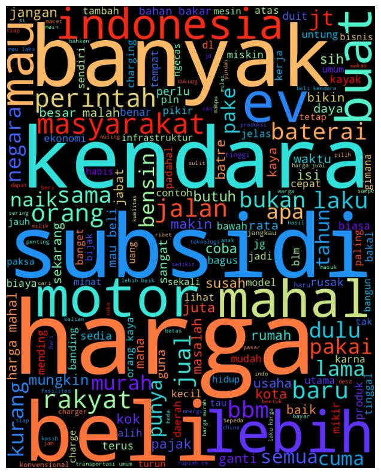
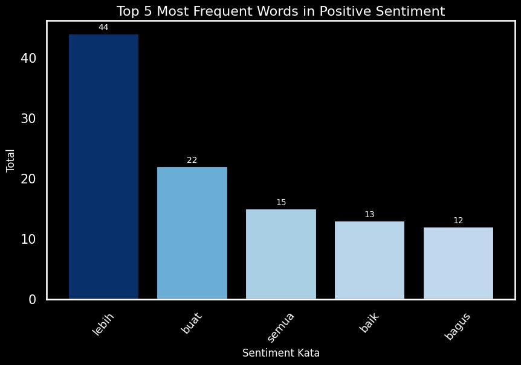
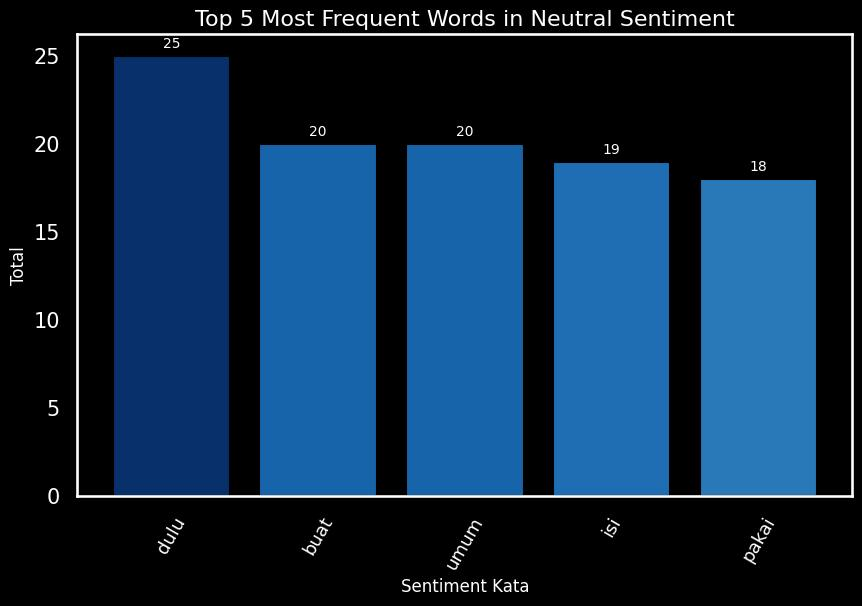

ANALISIS SENTIMENT INTENSIF MOBIL LISTRIK INDONESIA
Tentang Data : Data ini merupakan komentar-komnetar masyarakat terkait pemeberlakuan intensif mobil listrik di Indonesia. Komentar-komentar yang digunakan merupakan komentar yang diambil dari berbagai video yang membahas tentang "Pemeberlakuan Intensif Mobil Listrik" pada platform Youtube. Komentar-komentar tersebut diambil dengan menggunakan API resmi Youtube.
Metode Analisis : Indo-Bert Pengklasifikasi Sentimen Basis BERT Indonesia adalah model klasifikasi teks sentimen. Model ini awalnya adalah model IndoBERT Base Model yang telah dilatih sebelumnya menggunakan kumpulan data sentimen Prosa.
Data : https://www.kaggle.com/datasets/billycemerson/analisis-sentimen-terkait-intensif-mobil-listrik
WORLD CLOUD
Summary : Kata "harga" muncul paling sering (446 kali), mengindikasikan perhatian utama masyarakat terhadap biaya atau harga mobil listrik. Hal ini menunjukkan bahwa faktor harga menjadi salah satu kendala atau pertimbangan penting dalam penerimaan mobil listrik. Kata "mahal" (258 kali) memperkuat pandangan bahwa banyak masyarakat merasa harga mobil listrik saat ini masih terlalu tinggi untuk dapat dijangkau oleh sebagian besar konsumen. Kata seperti "beli" (325 kali) dan "mau" (269 kali) menunjukkan minat atau niat masyarakat terhadap mobil listrik. Namun, niat tersebut kemungkinan besar dipengaruhi oleh faktor harga atau subsidi. Kata "subsidi" (288 kali) sering muncul, mengindikasikan bahwa banyak masyarakat memperhatikan atau mendiskusikan peran pemerintah dalam memberikan dukungan finansial untuk mendorong adopsi mobil listrik. Subsidi dianggap sebagai langkah penting untuk meningkatkan daya beli. Kata seperti "kendara" (305 kali) dan "ev" (217 kali) menggambarkan fokus pada teknologi kendaraan listrik (Electric Vehicle) sebagai salah satu solusi mobilitas yang lebih berkelanjutan. Kata "lebih" (237 kali) dan "banyak" (239 kali) menunjukkan preferensi masyarakat untuk membandingkan keuntungan mobil listrik dibandingkan kendaraan konvensional, baik dari segi efisiensi maupun dampaknya terhadap lingkungan. Munculnya kata "rakyat" (201 kali) menyoroti perhatian masyarakat terhadap keadilan dalam penerapan kebijakan intensif mobil listrik. Hal ini menunjukkan adanya kekhawatiran apakah kebijakan ini benar-benar berpihak pada rakyat banyak atau hanya menguntungkan kelompok tertentu.
EMOTION ANALYST

Summary : Komentar Positif: Sebanyak 1,029 komentar menunjukkan sentimen positif, yang mencakup apresiasi, dukungan, atau pandangan optimis terhadap kebijakan mobil listrik. Ini menunjukkan sebagian besar masyarakat mendukung kebijakan tersebut, baik dari sisi keberlanjutan lingkungan maupun potensi efisiensi ekonomi. Komentar Netral: Sebanyak 275 komentar bersifat netral, menunjukkan bahwa komentator memberikan opini deskriptif atau tidak memihak. Mereka mungkin sekadar membahas fakta atau memberikan saran tanpa menyatakan dukungan atau ketidaksetujuan. Komentar Negatif: Sebanyak 213 komentar menyatakan sentimen negatif, yang berisi kritik, kekhawatiran, atau ketidakpuasan terhadap kebijakan ini. Kritik yang umum dapat mencakup kekhawatiran tentang infrastruktur pendukung.
Summary : Kata "lebih" menjadi yang paling dominan muncul. Hal ini menunjukkan harapan masyarakat agar kebijakan ini dapat membawa dampak yang lebih baik, seperti efisiensi, keberlanjutan lingkungan, atau kemajuan teknologi. Kata "buat" menunjukkan bahwa masyarakat antusias terhadap tindakan atau kebijakan lebih lanjut yang dapat diambil untuk mendukung implementasi mobil listrik. Kata "semua" menegaskan keinginan masyarakat agar kebijakan ini mencakup seluruh lapisan, baik dari sisi masyarakat umum maupun industri. Kata "baik" dan "bagus" menekankan penerimaan positif terhadap kebijakan ini. Hal ini mencerminkan dukungan masyarakat terhadap keberlanjutan mobil listrik sebagai bagian dari transisi menuju energi bersih. Data ini menunjukkan adanya penerimaan yang cukup positif dari masyarakat terhadap kebijakan pemberlakuan intensif mobil listrik. Masyarakat tidak hanya mendukung ide tersebut tetapi juga mengharapkan tindakan nyata untuk memastikan implementasi yang efektif dan adil bagi semua pihak.
Summary : Pola ini menunjukkan fokus diskusi yang beragam, meliputi pengalaman masa lalu (dulu), kepentingan penggunaan (pakai), konteks umum kebijakan (umum), serta elemen spesifik kebijakan atau teknologi (isi dan buat). Tingginya frekuensi kata terkait "umum" dan "isi" mungkin mencerminkan perlunya sosialisasi lebih lanjut oleh pemerintah atau stakeholder untuk memberikan pemahaman yang lebih mendalam terkait kebijakan. Sentimen netral menunjukkan bahwa masyarakat sedang berada dalam tahap awal mengenali dan mengevaluasi kebijakan ini.

Summary : "Mahal" : Kata ini menunjukkan bahwa masyarakat merasa harga mobil listrik masih terlalu tinggi dan menjadi penghalang utama dalam adopsinya. Faktor ekonomi tampaknya menjadi perhatian utama, mengindikasikan perlunya kebijakan subsidi yang lebih signifikan atau insentif lain untuk menurunkan harga. "Lebih" : Kata ini sering muncul dalam konteks perbandingan, seperti perbandingan antara mobil listrik dengan kendaraan konvensional (BBM). Hal ini bisa menunjukkan bahwa masyarakat mungkin menganggap mobil listrik belum lebih baik atau lebih praktis daripada alternatif yang ada. "Buat" : Kata ini kemungkinan terkait dengan komentar tentang produksi atau manfaat mobil listrik. Banyak komentar mungkin mempertanyakan apakah kebijakan ini benar-benar dibuat untuk kepentingan masyarakat luas atau hanya untuk kelompok tertentu. "Jual" : Kata ini menunjukkan adanya kekhawatiran tentang bagaimana pasar mobil listrik akan berkembang. Masyarakat mungkin merasa bahwa mobil listrik akan sulit dijual kembali (resale value rendah) atau pasar untuk mobil listrik masih belum matang. "Bukan" : Kata ini sering digunakan dalam konteks negasi, seperti "bukan solusi," "bukan prioritas," atau "bukan kebutuhan saat ini." Hal ini menunjukkan bahwa sebagian masyarakat merasa kebijakan mobil listrik bukanlah hal yang paling mendesak untuk saat ini, terutama jika dibandingkan dengan masalah lain seperti harga BBM atau infrastruktur.